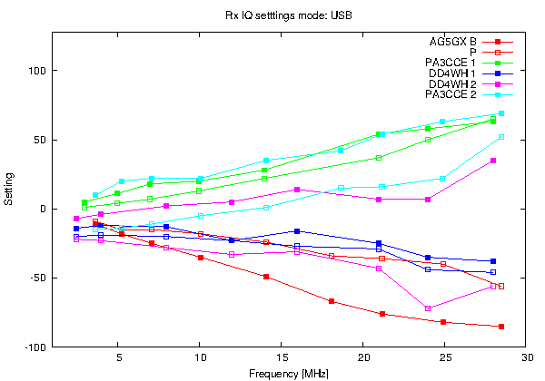

mcHF receiver IQ settings
Data source:
github issue #233

LSB RX Bal. and Phase found in the gitub issue #233, plus my data (AG5GX). Filled square is Bal. Open square is Phase.
AG5GX
v0.5 kit (pre-soldered). Input -70dBm.
Measurement details
.
PA3CCE 1
Apr 8's post. v0.4(?)
DD4WH 1
Apr 10's post1. 0.4 original(?)
DD4WH 2
Apr 10's post2. Removed U12 and U13, 0R for R22-R25.
PA3CCE 2
May 22's post. v0.5(RF)
skimu@mac.com